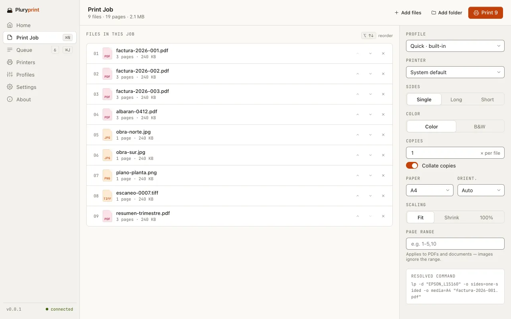
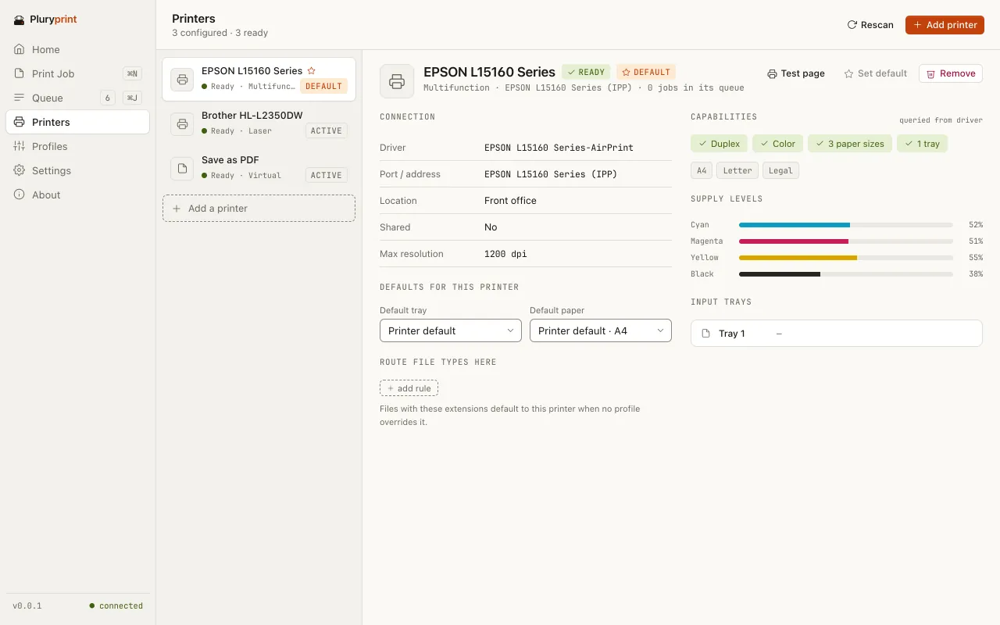
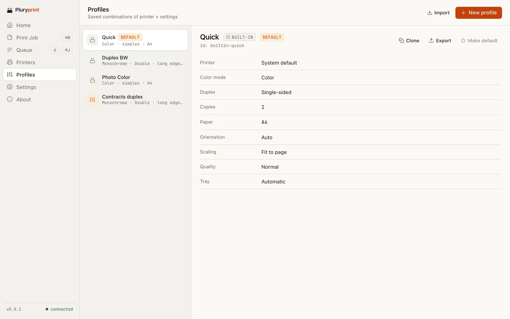

Select 5, 50 or 500 files. Print them all.
Free batch printing for Windows and macOS. No 15-file limit, no Adobe and no $149 licence.
Free · No account · No telemetry · GPL-3.0
Illustration: nine files selected in Finder, the Services menu with “Print with Pluryprint”, a printer fanning sheets out in three directions and a queue counter that reaches 500 of 500. Behind it, the app’s Queue screen.
Past the fifteen-file wall.
Select more than about 15 files in Windows and Print disappears from the menu. The paid fixes cost $79.95 to $149; the free ones are abandoned or print PDFs only.
Pluryprint takes the whole selection, 5 files or 500, and turns it into one job with one set of print settings.
- macOS, today: Finder › Services › “Print with Pluryprint”, or with the default profile. Built into the app; no extension to enable.
- Windows, coming: the Explorer submenu is written and tested in CI, with no file limit, but the installer does not register it yet.
- On both: drag files or folders onto the window, with or without subfolders.

It all happens on your machine.
No account, no cloud, no telemetry. Every file becomes a PDF on your computer and goes straight to your printer.
25 extensions
PDFs and images (JPG, PNG, TIFF, BMP, WebP) directly. HEIC, Office, OpenDocument, HTML and Markdown rely on tools you install yourself.
Named profiles
Copies, collation, duplex, colour or grayscale, paper, orientation, scaling and page ranges. Three built in and as many of your own as you like, to import and export.
A queue that drops nothing
Saved on disk and recovered after a crash. It retries three times (1, 5 and 25 s); if it still fails, it tells you why. No file is skipped silently.
A screen for every step.
Seven screens: Home, Print Job, Queue, Printers, Profiles, Settings and About.
Queue.
Up to two conversions at once and one print at a time. Pause, resume or cancel one job or the whole queue, and see it as a list, a board or a timeline.
Printers.
The system’s printers, with their status, capabilities and supply levels. Find network printers through mDNS or add one by IP, and send each file type to a different printer.

Profiles.
Quick, Duplex BW and Photo Color come built in. Create, clone, edit and set a default; delete one and you have five seconds to undo it.

And from a script.
The same program has a command line: print, printers, profiles, queue and update, with --help on each, --json output and fixed exit codes. It opens no window.
It is not added to PATH yet: call it by the executable’s path. The command name may change before the first release.
Drag and drop · Folders with subfolders · Resolved command shown · Warns when a printer cannot do duplex or colour · Test page · Organisation policy · System notifications · Keyboard shortcuts · Light, dark or system · In English and Spanish
The numbers, plainly.
List prices in USD for one user, from each vendor’s website when we did our research (2026). They may have changed: check them before you decide. A dash: not stated.
Swipe the table to see all four alternatives
| What is compared | Pluryprint0.0.1 · pre-alpha | Print Conductor | 2Printer | Batch & Print Pro | FolderMill |
|---|---|---|---|---|---|
| Price | $0 | $149volume pricing down to $59 per user | $149 | $79.95Premium, $109.95 | Quotefor businesses |
| Open source | GPL-3.0once published | No | No | No | No |
| Formats | 25 extensionssome need external tools | 90+ | 90+ | 30+ | 90+ |
| From the right-click menu | Finder › Services, yesWindows Explorer: written, not installed yet | Explorer menuadds files to its window | Nocommand line | Not stated | Nohot folders |
| Command line | Yes, with --json | Partial | Yes | Yes | No |
| macOS | Yes | No | No | No | No |
| Account or telemetry | None | Not stated | Not stated | Not stated | Not stated |
Where others are ahead: many more formats, years of use and published releases. Print Conductor already plugs into the Windows Explorer menu.
The difference: free and GPL, it prints straight from the menu with a profile instead of only loading files into another window, and it has a native entry in Finder’s Services.
Sources: Print Conductor · its Explorer menu guide · 2Printer · Batch & Print Pro · FolderMill · gHacks review
Not ready to download yet.
Pluryprint is pre-alpha, version 0.0.1. There is no public release yet and the repository is not open yet. This page will say so as soon as they are.
- Windows 10 and 11 · x64Built in CI. Per-user installer, no administrator rights.
- macOS · Apple siliconBuilt and tested in CI. .app and .dmg; no universal binary.
- Windows · ARM64Targeted: it is checked to compile, but there is no binary yet.
- LinuxOut of scope for now.
Not code-signed: once there is a release, SmartScreen on Windows and Gatekeeper on macOS will warn when you open it.
Before you ask.
Is it really free?
Yes. It costs $0, needs no account and has no paid tier. It is licensed GPL-3.0.
Do my files leave my computer?
No. Pluryprint converts and prints on your machine. It only goes online to check for updates (at startup, at most once a day, or from About) and, if you ask it to, to download one. There is no telemetry.
Do I need Adobe?
No. PDFs are printed as they are after a structural check, and images are converted to PDF inside the app. On Windows, printing uses SumatraPDF; if it is not found, the job pauses and tells you.
Why does Word need LibreOffice?
Because every file is turned into a PDF before it is printed. For Word, Excel, PowerPoint, OpenDocument, TXT and RTF, Pluryprint uses LibreOffice, which you install separately. HTML needs Edge, Chrome or Chromium (printed with no network access) and Markdown needs Pandoc. If something is missing, the job pauses and tells you what to install.
Is there a file limit?
Not on the number of files. There is a maximum file size, which you can change in Settings.
What if a file fails?
It is retried three times, after 1, 5 and 25 seconds. If it still fails, it stays in the queue with the reason. Files it cannot handle come back with an explanation: none is skipped silently.
Does it work from the right-click menu?
On macOS, yes: select the files in Finder and choose Services › Print with Pluryprint. On Windows, the Explorer submenu (print N files, print with a profile, configure the job or add it to the queue) is written and tested, but the installer does not register it yet. Windows 10 has no fallback yet.
Does it run on Apple silicon, Windows ARM or Linux?
Apple silicon, yes: that is where it is tested in CI. Windows ARM64 is targeted, but there is no binary yet. Linux is out of scope for now.
Why will Windows and macOS warn when I open it?
Because the builds are not code-signed. Once there is a public release, SmartScreen and Gatekeeper will show a warning the first time.
How does it update?
The app tells you when there is a new version and you choose: install now (signature verified, no administrator rights), remind me later or skip that version. It never updates by itself. No update channel is published yet.
Right-click. Print everything.
On macOS today; on Windows as soon as the installer registers the menu.
Free · No account · No telemetry